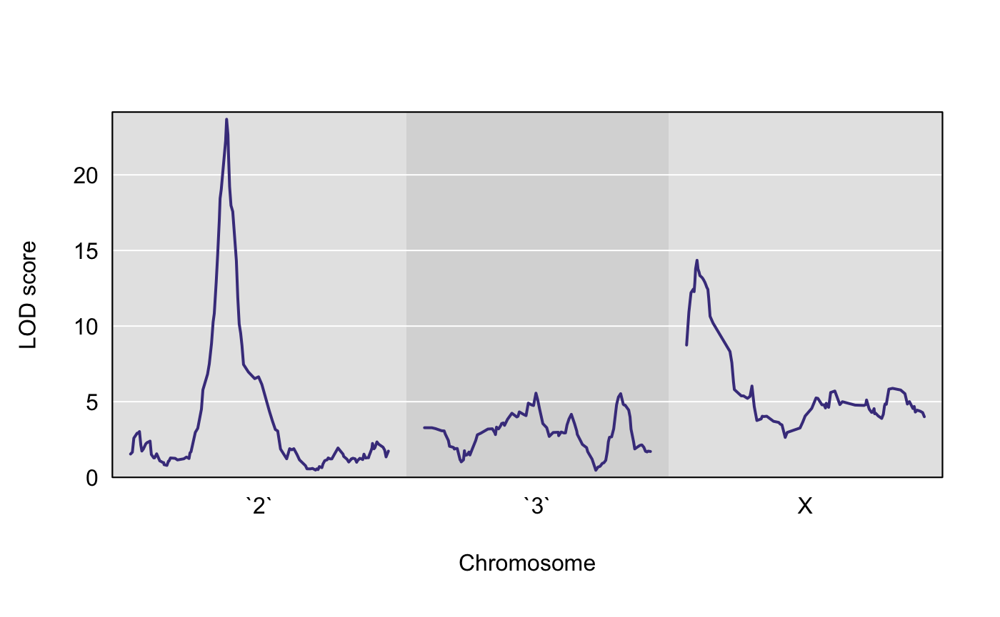
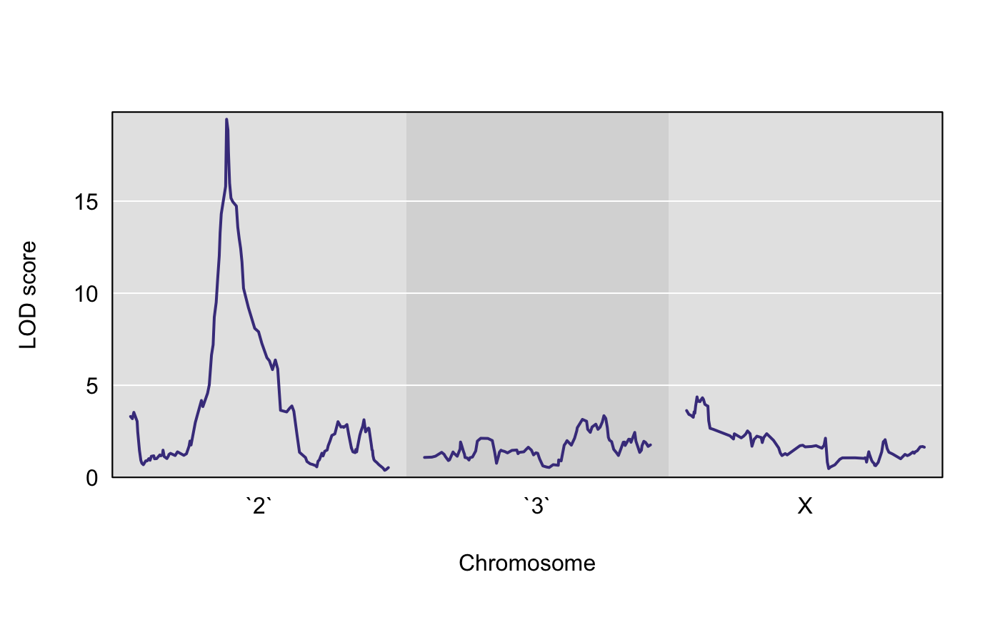
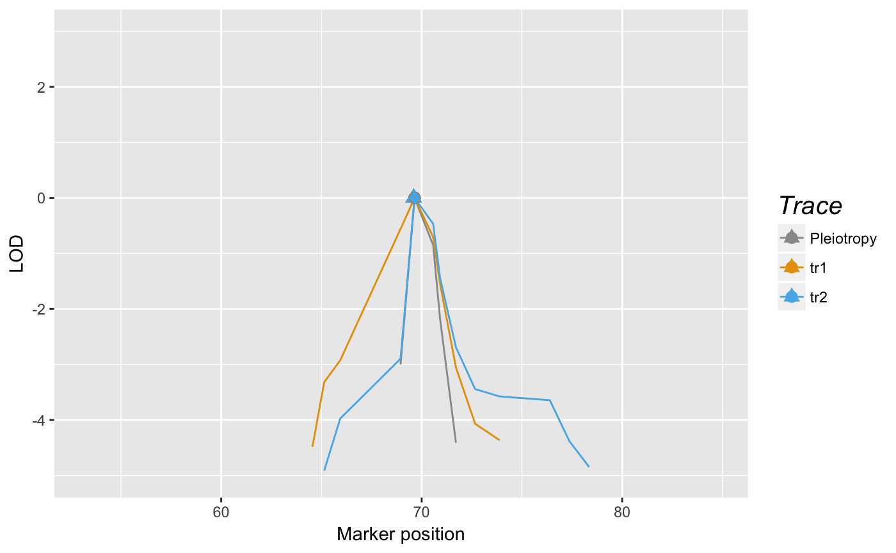

testing-close-linkage-vs-pleiotropy.Rmd
Our setting involves a pair of traits, \(Y_1\) and \(Y_2\), each of which individually (univariately) maps to a single genomic region. \(Y_1\) and \(Y_2\) are both measured on the same subjects. The exact definition of a genomic region is imprecise; in practice, it may be as large as 4 or 5 Mb. We seek to distinguish whether \(Y_1\) and \(Y_2\) associations (in the genomic region of interest) arise due to a single QTL or whether there are two two distinct loci, each of which associates with exactly one of the two traits. We recognize that more complicated association patterns are possible, but we neglect them in this test.
qtl2pleio
We install qtl2pleio from github via the devtools R package, which is available from CRAN.
If you haven’t installed devtools R package, you can do so with this line of code:
install.packages("devtools")Now that you have installed devtools, you can install qtl2pleio from its Github repository with this line of code:
devtools::install_github("fboehm/qtl2pleio")The above line only needs to be run once on a given computer (unless you wish to install a newer version of the package).
We then load the library into our R session with the library command:
library(qtl2pleio)We’ll work with data from the qtl2data R package, which is on github. First, we install and load the qtl2 package.
devtools::install_github("rqtl/qtl2")We use the above line once to install the package on our computer before loading the package with the library command.
library(qtl2)qtl2data R packageWe read from github.com data from the qtl2data R package.
tmpfile <- tempfile()
file <- paste0("https://raw.githubusercontent.com/rqtl/",
"qtl2data/master/DOex/DOex_alleleprobs.rds")
download.file(file, tmpfile)
pr <- readRDS(tmpfile)
unlink(tmpfile)
tmpfile <- tempfile()
file <- paste0("https://raw.githubusercontent.com/rqtl/",
"qtl2data/master/DOex/DOex_pmap.csv")
download.file(file, tmpfile)
pmap_pre <- read.csv(tmpfile)
unlink(tmpfile)
pm2 <- pmap_pre[pmap_pre$chr == 2, 3]
names(pm2) <- pmap_pre[pmap_pre$chr == 2, 1]
pm3 <- pmap_pre[pmap_pre$chr == 3, 3]
names(pm3) <- pmap_pre[pmap_pre$chr == 3, 1]
pmX <- pmap_pre[pmap_pre$chr == "X", 3]
names(pmX) <- pmap_pre[pmap_pre$chr == "X", 1]
list(pm2, pm3, pmX) -> pm
names(pm) <- c("`2`", "`3`", "X")We now have an allele probabilities object stored in pr.
names(pr)
#> [1] "2" "3" "X"
dim(pr$`2`)
#> [1] 261 8 125We see that pr is a list of 3 three-dimensional arrays - one array for each of 3 chromosomes.
For our statistical model, we need a kinship matrix. Although we don’t have genome-wide data - since we have allele probabilities for only 3 chromosomes - let’s calculate a kinship matrix using “leave-one-chromosome-out”. In practice, one would want to use allele probabilities from a full genome-wide set of markers.
calc_kinship(probs = pr, type = "loco") -> kinshipstr(kinship)
#> List of 3
#> $ 2: num [1:261, 1:261] 0.6889 0.0734 0.2169 0.0517 0.0488 ...
#> ..- attr(*, "n_pos")= int 195
#> ..- attr(*, "dimnames")=List of 2
#> .. ..$ : chr [1:261] "1" "4" "5" "6" ...
#> .. ..$ : chr [1:261] "1" "4" "5" "6" ...
#> $ 3: num [1:261, 1:261] 0.654 0.0732 0.2084 0.0917 0.0772 ...
#> ..- attr(*, "n_pos")= int 218
#> ..- attr(*, "dimnames")=List of 2
#> .. ..$ : chr [1:261] "1" "4" "5" "6" ...
#> .. ..$ : chr [1:261] "1" "4" "5" "6" ...
#> $ X: num [1:261, 1:261] 0.4694 0.0714 0.2058 0.098 0.1135 ...
#> ..- attr(*, "n_pos")= int 227
#> ..- attr(*, "dimnames")=List of 2
#> .. ..$ : chr [1:261] "1" "4" "5" "6" ...
#> .. ..$ : chr [1:261] "1" "4" "5" "6" ...We see that kinship is a list containing 3 matrices. Each matrix is 261 by 261 - where the number of subjects is 261 - and symmetric. The \((i, j)\) cell in the matrix contains the estimate of identity-by-state (IBS) probability for randomly chosen alleles at a given locus for those two subjects.
Before we simulate phenotype data, we first specify our statistical model.
We use the model:
\[vec(Y) = X vec(B) + vec(G) + vec(E)\]
where \(Y\) is a \(n\) by \(2\) matrix, where each row is one subject and each column is one quantitative phenotype. \(X\) is a \(2n\) by \(2f\) design matrix containing \(n\) by \(f\) allele probabilities matrices for each of two (possibly identical) markers. Thus, \(X\) is a block-diagonal matrix, with exactly two \(n\) by \(f\) blocks on the diagonal. \(B\) is \(f\) by 2 matrix. “vec” refers to the vectorization operator. “vec(B)”, where \(B\) is a \(f\) by \(2\) matrix, is, thus, a (column) vector of length \(2f\) that is formed by stacking the second column of \(B\) beneath the first column of \(B\).
\(G\) is a matrix of random effects. We specify its distribution as matrix-variate normal with mean being a \(n\) by \(2\) matrix of zeros, covariance among row vectors a \(n\) by \(n\) kinship matrix, \(K\), and covariance among column vectors a \(2\) by \(2\) genetic covariance matrix, \(V_g\).
In mathematical notation, we write:
\[G \sim MN_{\text{n by 2}}(0, K, V_g)\]
We also need to specify the distribution of the \(E\) matrix, which contains the random errors. \(E\) is a random \(n\) by \(2\) matrix that is distributed as a matrix-variate normal distribution with mean being the \(n\) by \(2\) zero matrix, covariance among row vectors \(I_n\), the \(n\) by \(n\) identity matrix, and covariance among columns the \(2\) by \(2\) matrix \(V_e\).
In practice, we typically observe the phenotype matrix \(Y\). We also treat as known the design matrix \(X\) and the kinship matrix \(K\). We then infer the values of \(B\), \(V_g\), and \(V_e\).
qtl2pleio::sim1
The function to simulate phenotypes in qtl2pleio is sim1. By examining its help page, we see that it takes five arguments. The help page also gives the dimensions of the inputs.
# set up the design matrix, X
pp <- pr$`2`
X <- gemma2::stagger_mats(pp[ , , 50], pp[ , , 50])
# assemble B matrix of allele effects
B <- matrix(data = c(-1, -1, -1, -1, 1, 1, 1, 1, -1, -1, -1, -1, 1, 1, 1, 1), nrow = 8, ncol = 2, byrow = FALSE)
# verify that B is what we want:
B
#> [,1] [,2]
#> [1,] -1 -1
#> [2,] -1 -1
#> [3,] -1 -1
#> [4,] -1 -1
#> [5,] 1 1
#> [6,] 1 1
#> [7,] 1 1
#> [8,] 1 1
# set.seed to ensure reproducibility
set.seed(2018-01-30)
# call to sim1
Ypre <- sim1(X = X, B = B, Vg = diag(2), Ve = diag(2), kinship = kinship[[1]])
Y <- matrix(Ypre, nrow = 261, ncol = 2, byrow = FALSE)
rownames(Y) <- rownames(pp)
colnames(Y) <- c("tr1", "tr2")Let’s perform univariate QTL mapping for each of the two traits in the Y matrix.
scan1(genoprobs = pr, pheno = Y[ , 1], kinship = kinship) -> s1
scan1(genoprobs = pr, pheno = Y[ , 2], kinship = kinship) -> s2plot(s1, pm)
plot(s2, pm)
find_peaks(s1, map = pm)
#> lodindex lodcolumn chr pos lod
#> 1 1 pheno1 `2` 69.64501 23.675561
#> 2 1 pheno1 `3` 80.26172 5.563364
#> 3 1 pheno1 X 12.72372 14.349454
find_peaks(s2, map = pm)
#> lodindex lodcolumn chr pos lod
#> 1 1 pheno1 `2` 69.64501 19.446244
#> 2 1 pheno1 `3` 127.28312 3.346147
#> 3 1 pheno1 X 12.72372 4.366299out <- scan_pvl(probs = pp, pheno = Y, kinship = kinship$`2`, start_snp1 = 38, n_snp = 25)library(dplyr)
#>
#> Attaching package: 'dplyr'
#> The following objects are masked from 'package:stats':
#>
#> filter, lag
#> The following objects are masked from 'package:base':
#>
#> intersect, setdiff, setequal, union
out %>%
tidy_scan_pvl(pm2) %>%
add_intercepts(intercepts_univariate = c(69.6, 69.6)) %>%
plot_pvl(phenames = c("tr1", "tr2"))
#> Warning: Removed 48 rows containing missing values (geom_path).
#calc_lrt(out)